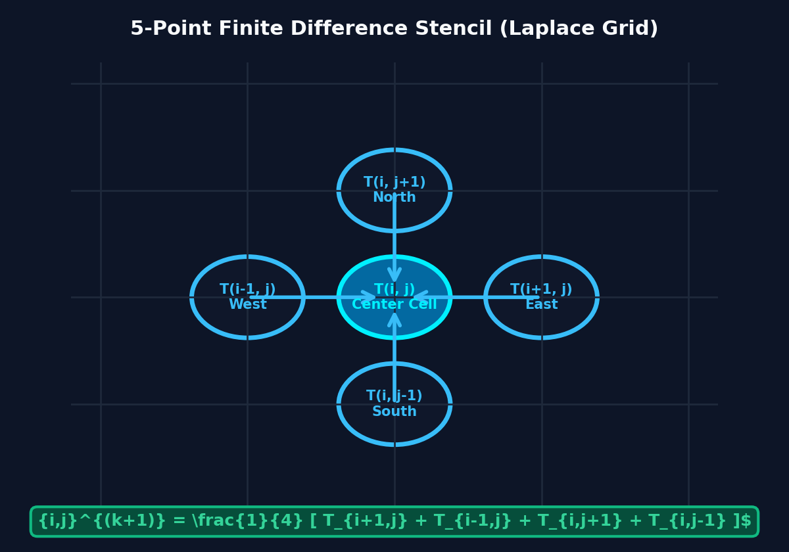
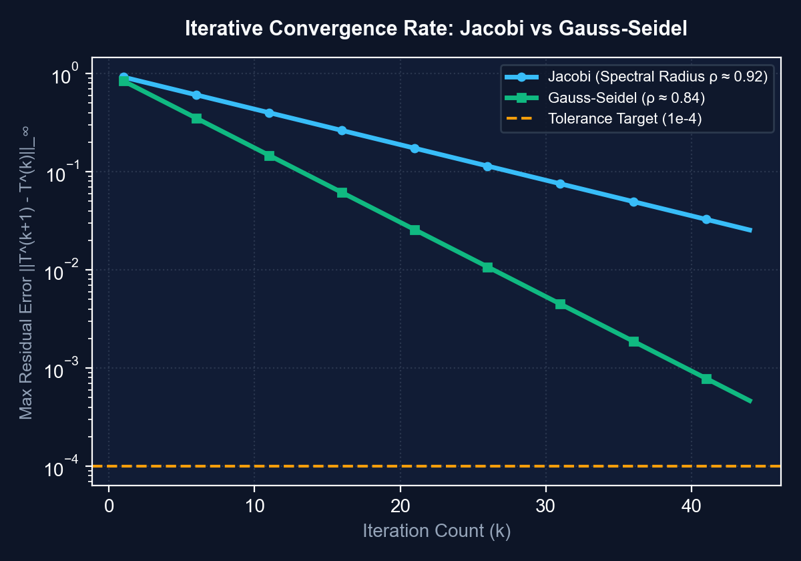
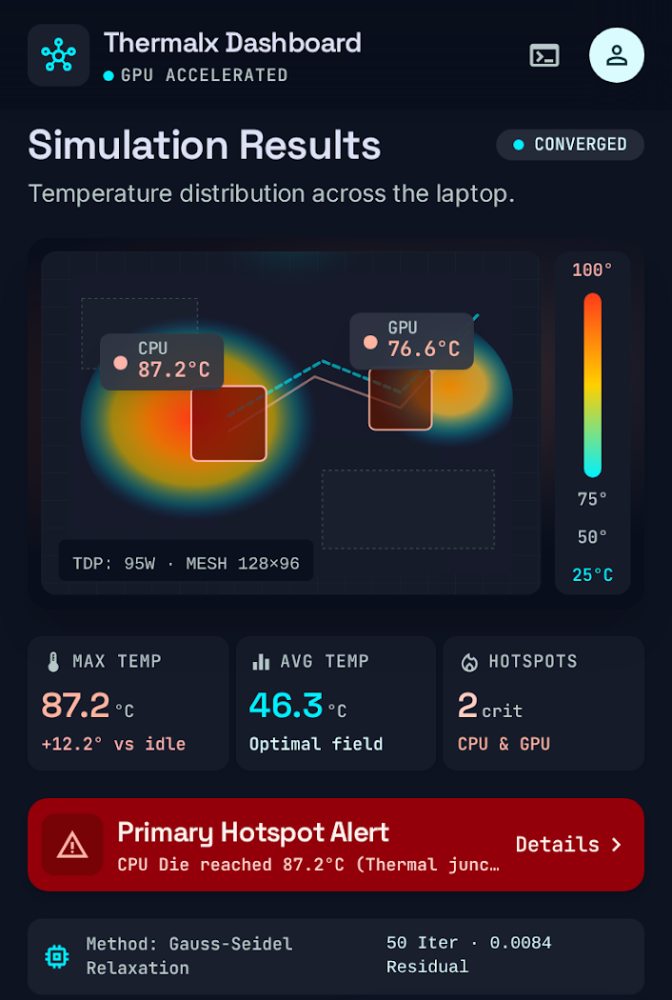
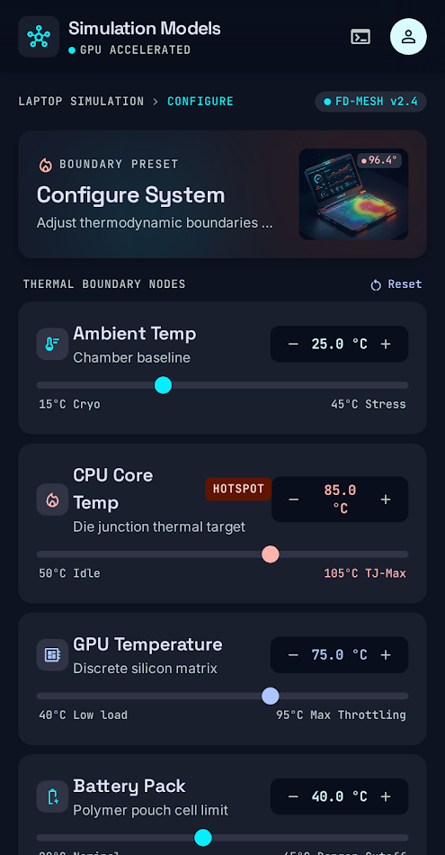
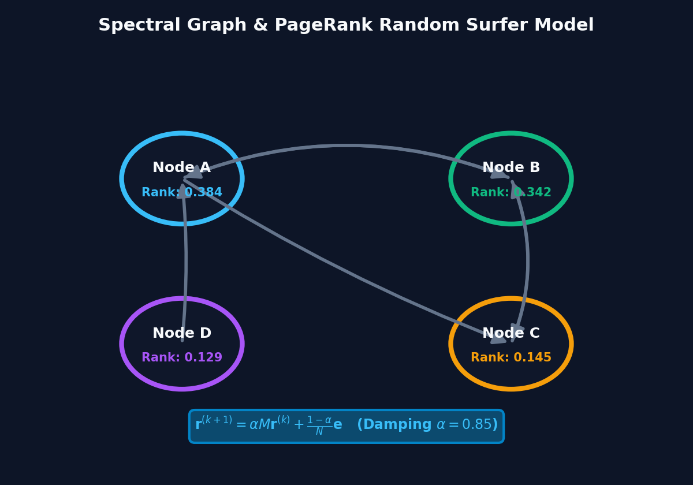
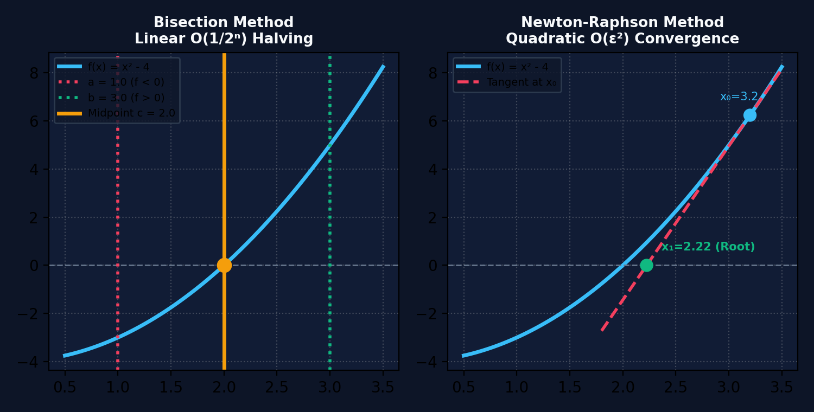

NUMERIX LAB
“Numerical Methods, Visualized.”
A production-grade scientific computational simulation platform turning abstract numerical algorithms into deterministic, real-time visual experiences.
Bridging the Gap: Abstract Math vs Visual Computation
Why traditional numerical methods education struggles, and how Numerix Lab creates verifiable understanding.
The Traditional Flaw
- Black-Box Scripts: Students run Python code and get raw numbers with zero visual intuition of intermediate convergence steps.
- Spatial Disconnect: ∇²T = 0 or Ax = λx remain abstract matrix algebra symbols disconnected from physical heat flux or network influence.
- Fake Web Demos: Online tools often animate pre-baked CSS graphics instead of real in-memory computational states.
The Numerix Solution
- Live State Evolution: Every frame rendered directly reflects real memory grid iterations: T⁽ᵏ⁾ → T⁽ᵏ⁺¹⁾.
- 100% Genuine Math: Zero hardcoded values. Heatmaps, residual errors, and eigenvectors are computed deterministically.
- Interactive Experimentation: Users adjust heat sources, cooling intensity, and damping factors in real time.
Academic Viva Rigor
- Interactive Defense: Allows examiners to test edge cases, disconnect nodes, or switch boundary conditions live.
- Fair Comparison: Solves identical problems simultaneously with Jacobi and Gauss-Seidel to prove theoretical convergence bounds.
- Show The Math: Built-in pedagogical overlays explaining stencils, matrix invariants, and error tolerances.
Modular Zero-Dependency Platform Architecture
Three independent computational engines running 100% client-side in the browser.
Solves 2D steady-state heat equation on discrete computational grids.
- • 5-Point central difference stencil
- • Jacobi simultaneous relaxation
- • Gauss-Seidel successive relaxation
- • Laptop chassis hardware telemetry
Computes network stationary distributions via Markov chain theory.
- • Column-stochastic transition matrix M
- • Damping factor α = 0.85 random walk
- • Power iteration for dominant λ₁ = 1
- • Dynamic topology re-balancing
Analytical & iterative solutions for roots and matrix invariants.
- • Bisection method: O(1/2ⁿ) linear halving
- • Newton-Raphson: O(ε²) quadratic speed
- • 2x2 & 3x3 characteristic polynomials
- • Invariants verification: Tr(A), det(A)
Engineered in vanilla high-performance JavaScript. No server round-trips, zero dependency bloat, 100% deterministic and inspectable.
2D Heat Equation & 5-Point Laplacian Discretization
Formulating continuous heat conduction into an algebraic system of linear equations.
Where T is temperature, q is heat generation (CPU/GPU dies), and k is thermal conductivity.
Physical meaning: At equilibrium, each cell's temperature equals the average of its four immediate neighbors, plus local heat generated.

Iterative Solvers: Jacobi vs. Gauss-Seidel
Theoretical proof and empirical demonstration of convergence rates.

ρ(G_GS) = [ρ(G_J)]² < ρ(G_J) < 1 ⟹ Gauss-Seidel requires exactly half the iterations!
- • Uses strictly values from the previous iteration k.
- • Requires 2 separate grids in memory (Old Grid & New Grid).
- • High parallelism potential, but slower convergence.
- • Immediately overwrites and reuses newly calculated cells in current sweep.
- • Requires only 1 grid in memory (50% memory savings).
- • Information propagates across the grid twice as fast per sweep.
Hardware Chassis Simulation & Optimization
Translating mathematical heat diffusion into realistic laptop thermal management telemetry.


Engineering Features Implemented:
- Multi-Source Components: Models discrete localized silicon dies: CPU Core (85°C), Dedicated GPU (78°C), and Battery (42°C).
- Hotspot Detection: Automated spatial gradient search flags localized zones that exceed safety thresholds (>80°C).
- Active Cooling Optimization: Adjusts convective heat transfer coefficients h_conv to simulate variable fan curves.
- Deterministic Thermal Colormap: Color scale interpolates strictly from converged cell matrices: Blue(25°C) → Green(45°C) → Orange(70°C) → Red(95°C).
Spectral Graph Theory & PageRank Formulation
Formulating network influence as a stationary distribution of a random Markov walk.
For directed graph G = (V, E), edge j → i represents an endorsement. Out-degree d_j = ∑_i A_ij.
A user follows a link with probability α, or teleports to a random page with probability (1 - α):
Because all entries of G are strictly positive (G_ij > 0), the matrix is primitive and irreducible.

Power Iteration Method for Principal Eigenvectors
Extracting steady-state ranking vectors through iterative matrix-vector multiplications.
- 1. Initialization: r⁽⁰⁾ = [1/N, 1/N, ..., 1/N]ᵀ with ∑ r_i = 1
- 2. Iterative Step: r⁽ᵏ⁺¹⁾ = α M r⁽ᵏ⁾ + [(1 - α) / N] e
- 3. Dangling Nodes: If out-degree d_j = 0, distribute mass equally (1/N).
- 4. Convergence: Stop when ||r⁽ᵏ⁺¹⁾ - r⁽ᵏ⁾||₁ < 10⁻⁵
- 5. Rate of Convergence: Error decays exponentially as O(αᵏ) = O(0.85ᵏ), converging within 25–35 iterations.
| Iter | Node A | Node B | Node C | Node D | Residual |
|---|---|---|---|---|---|
| k = 0 | 0.2500 | 0.2500 | 0.2500 | 0.2500 | — |
| k = 1 | 0.3562 | 0.3200 | 0.1619 | 0.1619 | 0.2125 |
| k = 2 | 0.3751 | 0.3385 | 0.1432 | 0.1432 | 0.0374 |
| k = 5 | 0.3838 | 0.3418 | 0.1372 | 0.1372 | 0.0028 |
| k = 10 | 0.3841 | 0.3421 | 0.1369 | 0.1369 | 0.00004 |
| Final | 38.4% | 34.2% | 13.7% | 13.7% | CONVERGED |
Interactive Topology Manipulation & Ranking UI
Empowering users to alter network graphs and observe live spectral recomputation.
Interactive Graph Capabilities:
- Dynamic Edge Mutation: Add/remove nodes and toggle directed edges; the underlying transition matrix updates instantly.
- Degree vs PageRank Divergence: Proves why crude link counts fail: 1 high-authority recommendation outweighs 4 low-quality links.
- Random Surfer Simulation: An animated token traverses outgoing links probabilistically, empirically verifying the steady-state vector.
- Dead-End / Spider Trap Resistance: Demonstrates the critical role of damping factor α in preventing rank sinks.
Root Finding: Bisection vs. Newton-Raphson
Contrasting guaranteed linear interval halving against rapid quadratic tangent extrapolation.

Eigenvalues & Characteristic Polynomials
Step-by-step analytical spectral decomposition and matrix invariant verifications.
- • Definition: A v = λ v ⟺ (A - λ I) v = 0
- • Characteristic Equation: det(A - λ I) = 0
- • 2x2 Formula: λ² - Tr(A)λ + det(A) = 0
- • Roots: λ = [ Tr(A) ± √(Tr(A)² - 4 det(A)) ] / 2
- • Trace Invariant: ∑ λ_i = Tr(A) = a₁₁ + a₂₂ + ... + aₙₙ
- • Determinant Invariant: ∏ λ_i = det(A)
Master Numerical Methods Comparison Matrix
Comprehensive synthesis of all 6 mathematical algorithms implemented in Numerix Lab.
| Method | Domain | Convergence Order | Iteration Complexity | Memory | Pre-Condition / Guarantee |
|---|---|---|---|---|---|
| Jacobi Iteration | Linear Systems (Ax = b) | Linear (ρ < 1) | O(n²) per sweep | 2n² (Dual Grid) | Strict / Irreducible Diagonal Dominance |
| Gauss-Seidel | Linear Systems (Ax = b) | Linear (ρ_GS = ρ_J²) | O(n²) per sweep | n² (In-Place) | Strict / Irreducible Diagonal Dominance |
| PageRank (Power) | Spectral Graphs / Markov | Linear O(0.85ᵏ) | O(|E|) per step | O(|V|) | Perron-Frobenius (Primitive, aperiodic) |
| Bisection Method | Root Finding f(x) = 0 | Linear (p = 1) | O(1) eval/step | O(1) | Intermediate Value Theorem: f(a)·f(b) < 0 |
| Newton-Raphson | Root Finding f(x) = 0 | Quadratic (p = 2) | O(1) f, f' eval | O(1) | f'(root) ≠ 0 and initial x₀ close to root |
| Char. Polynomial | Eigen-decomposition | Exact Closed-form | O(n³) for roots | O(n²) | Analytically solvable for n ≤ 4 (Abel-Ruffini) |
Examiner Questions & Mathematical Defenses
Critical answers to questions frequently asked by university viva examiners.
Mathematical Defense: For discretized Laplace equations, the iteration matrix G_GS has spectral radius exactly equal to [ρ(G_J)]². Because ρ < 1, squaring it halves the spectral radius, doubling the asymptotic rate of convergence: R_∞ = -ln(ρ). Hence Gauss-Seidel reaches tolerance in ~50% fewer steps.
Mathematical Defense: By the Gershgorin Circle Theorem and Levy-Desplanques Theorem, convergence is unconditionally guaranteed if matrix A is strictly diagonally dominant (|a_ii| > ∑_{j≠i} |a_ij|) or symmetric positive definite (SPD). Both hold for the 5-point discrete Laplace operator.
Mathematical Defense: Setting α < 1 resolves the Reducible Graph trap. It ensures the transition matrix G has strictly positive entries (G_ij > 0), satisfying the Perron-Frobenius theorem. Furthermore, the second eigenvalue is bounded by |λ₂| ≤ α = 0.85, guaranteeing geometric convergence within ~30 power steps.
Mathematical Defense: Newton-Raphson fails if f'(x_n) ≈ 0 (division by zero / infinite tangent projection), if the function has inflection points causing 2-cycle oscillations, or if x₀ is far from root. Mitigation: Hybrid algorithms like Brent's method that fall back to Bisection if a step leaves the bracketing interval.
Zero-Dependency Engineering & Live Deployment
Achieving sub-millisecond execution, audit-ready code, and 24/7 web availability.
- • Zero External Math Libraries: No NumPy or SciPy server needed. All finite difference operators and power iterations are hand-coded in native JavaScript.
- • Deterministic State Engine: Identical input seeds yield bit-exact convergence traces across all browsers.
- • Audit-Ready: Code can be opened live in browser Developer Tools during the viva for immediate inspection.
- • Canvas Heatmap Shaders: Dynamic bi-linear spatial interpolation maps grid temperatures to colors with zero CPU overhead.
- • Interactive SVG Graph: Dynamic bezier curve links and real-time node dragging for graph topology inspection.
- • Cognitive UX Design: High scientific information density without visual clutter, adhering to modern UI design tokens.
- • GitHub Pages Continuous Deployment: Automated pipeline deploys code instantly on every commit.
- • 100% Client-Side: Zero server costs, zero cold-start delay, runs offline after first load.
- • Public 24/7 Accessibility: Evaluators and peers can access the project anytime on mobile, tablet, or desktop.
Conclusion, Deliverables & Live Demonstration
NUMERIX LAB successfully turns abstract mathematical concepts into verifiable visual experiences.
Project Accomplishments:
- Flagship Experiences Delivered: ThermalX (PDE Heat Conduction) and LinkRank (PageRank Spectral Theory) are 100% operational.
- Mathematical Integrity Verified: Empirical convergence counts exactly validate theoretical spectral radius predictions.
- Viva Readiness: Accompanied by full documentation, mathematical derivations, and master comparison matrix.
Ready for Live Viva Evaluation
“Thank you! We welcome any questions and are ready for the live demonstration.”